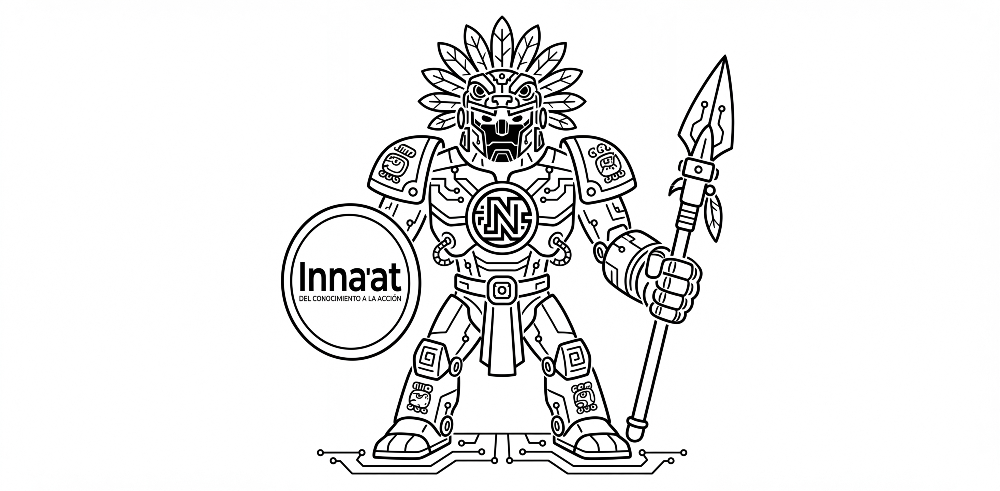
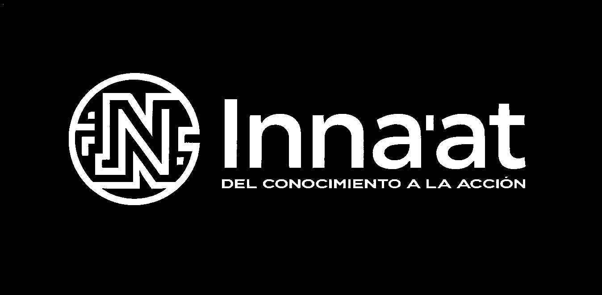

⚡ El multímetro y la Ley de Ohm
Instrumentación básica · TinkerCAD + Físico

Comprender el uso del multímetro para medir voltaje, corriente y resistencia, y aplicar la Ley de Ohm para analizar y validar circuitos eléctricos básicos.
La electricidad es el flujo de electrones a través de un material conductor. En los robots, este flujo permite que LEDs, sensores y motores funcionen. Tres conceptos fundamentales gobiernan este comportamiento: el Voltaje (fuerza que empuja electrones, en Volts), la Corriente (cantidad de electrones por segundo, en Amperes) y la Resistencia (oposición al flujo, en Ohms). La Ley de Ohm relaciona estas tres variables: V = I × R.
Este conocimiento permite evitar dañar componentes como LEDs, sensores o el ESP32. Un pin del ESP32 soporta máximo 40mA. Sin una resistencia calculada correctamente, el LED o el pin pueden quemarse permanentemente. También es la base para diagnosticar fallas en el seguidor de línea.
SIMULACIÓN — TINKERCAD / WOKWI
Construye y prueba el circuito en simulación antes de pasar al hardware real. Verifica que los valores sean coherentes.
MONTAJE FÍSICO — PROTOBOARD
Replica el circuito de la simulación en la protoboard con componentes reales. Verifica con el multímetro y registra los valores.


| Circuito / Experimento | Valor teórico | Valor calculado | Valor medido | % Error |
|---|---|---|---|---|
| Experimento 1 | ||||
| Experimento 2 | ||||
| Experimento 3 |
Quema el fusible del multímetro. La corriente siempre va en SERIE.
Sin resistencia la corriente es ilimitada y el LED se quema en segundos.
Medir voltaje con perilla en corriente puede dañar el multímetro.
El ánodo (+) es la patita larga. Invertirlo evita que el LED encienda.
Diseña un circuito donde el LED no se queme y tenga el brillo adecuado. Calcula tú mismo la resistencia necesaria para que circule exactamente 20mA: R = (V_bat − V_LED) ÷ I_LED.
Calcula el error entre teórico y medido y explica por qué existe. %Error = |(Teórico − Real)| ÷ Teórico × 100. Menciona mínimo 3 causas (tolerancia de componentes, resistencia interna, calibración del instrumento).
Reflexiona: ¿qué aprendiste? ¿cómo se relaciona con el seguidor de línea?
Hoja de mediciones: 3 circuitos con cálculo vs medición real + tabla de % de error
Tu práctica pasa si tienes los 3 circuitos medidos, los valores teóricos calculados, el % de error en cada uno y una conclusión escrita de mínimo 3 líneas.
Antes de cargar el código, verifica que el sensor esté a 1–2 cm de la superficie. Si las lecturas son inestables, ajusta el potenciómetro lentamente hasta que el LED indicador responda con claridad.